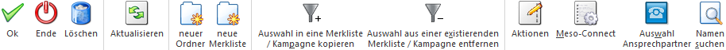

Die Merkliste ist die Zusammenstellung von bestimmten Datenbereichen, die nicht in eine Standardselektion zusammengefasst werden können (z.B. alle Kunden im PLZ-Bereich 1000 können nicht über die Konteneinschränkung von - bis selektiert werden). Merklisten gibt es für die Bereiche Artikel, Konten, Arbeitnehmer, Projekte, CRM und Adressen und können entweder direkt über den dafür vorgesehenen Menüpunkt oder aus den einzelnen Stammdatenmatchcodes angelegt werden. Dabei gibt es die Möglichkeit, dass eine Merkliste auch unterschiedliche Datenbereiche beinhalten kann, d.h. eine Merkliste kann z.B. sowohl Kunden als auch Artikel beinhalten.
Die Merkliste ist eine ganz spezielle Art von Filter, die in diversen Auswertungen herangezogen werden kann. Merklisten können hierbei individuell mit nur wenigen Mausklicks zusammengestellt werden und zum Beispiel per Drag & Drop auf sehr einfachen Weg bei den verschiedensten Auswertungen hinterlegt werden.
Zu finden ist die Merkliste in allen Applikationen unter dem Menüpunkt:
1 CRM
1 Merkliste

Da die Merkliste viele verschiedene Sichtweisen umfasst, die ist weitere Beschreibung in die folgenden Kapitel untergliedert:
ü Kapitel Merkliste - Anlage von
Merklisten
In diesem Kapitel wird die grundsätzliche Erzeugung von
Merklisten beschrieben.
ü Kapitel Merkliste - Verwaltung von
Merklisten
In diesem Kapitel wird der Aufbau des Fenster "Merkliste"
erläutert.
ü Kapitel Verwendung von Merklisten
In diesem
Kapitel wird die Verwendung von Merklisten als Selektionskriterium beschrieben,
was den Bereich "verfügbare Auswertungen" des Fensters "Merkliste"
einschließt.
ü Kapitel Merkliste als Kampagne verwenden
In
diesem Kapitel wird der Objekt-Typ "Adressen" des Fenster "Merkliste"
detailliert erklärt.
Buttons

Ø Ok
Durch Anwahl des Buttons "Ok" bzw. der Taste F5 wird die Merkliste gespeichert.
Ø Ende
Mit Hilfe des Buttons "Ende" bzw. der Taste ESC wird das Fenster geschlossen und alle nicht gespeicherten Änderungen verworfen.
Ø Löschen
Durch Anwahl des Buttons "Löschen" kann der gewählte Ordner (samt aller sich darin befindlichen Elemente) bzw. die gewählte Merkliste gelöscht werden.
Ø Aktualisieren
Mit dem Button "Aktualisieren" wird ein Abgleich der Ordner und Merklisten durchgeführt, d.h. es wird geprüft, ob neue öffentliche Ordner bzw. Merklisten vorhanden sind und entsprechend angezeigt.
Ø neuer Ordner
Zur strukturierten Ablage bzw. Verwaltung von Merklisten können mit Hilfe dieses Buttons persönliche bzw. öffentliche Ordner erzeugt werden. Der "Name" wird hierbei automatisch gebildet, die "Bezeichnung" kann individuell vergeben werden.
Hinweis
Die Zuweisung von Merklisten "in" Ordner erfolgt per Drag & Drop. Über diesen Weg können auch Ordner in Ordner verschoben werden, wobei dieses auf 2 Ebenen beschränkt ist (1 Hauptebene, 1 Unterebene).
Ø neue Merkliste
Durch Anwahl dieses Buttons kann eine neue Merkliste erstellt werden.
Ø Auswahl in eine Merkliste / Kampagne kopieren
Die selektierten Datensätze können mit Hilfe des Programms Kampagne/Merkliste verändern in eine neue bzw. bestehende Kampagne kopiert werden.
Ø Auswahl aus einer existierenden Merkliste / Kampagne entfernen
Die selektierten Datensätze können mit Hilfe des Programms Kampagne/Merkliste verändern aus einer bestehenden Kampagne entfernt werden.
Ø Aktionen (nur bei Objekt-Typ "Adressen")
Durch Anwahl dieses Buttons können für die selektierten Datensätze Aktionen ausgeführt werden. Die Art der Aktion wird dabei durch ein Kontextmenü ausgewählt. Folgende Aktionen stehen zur Verfügung:
ü  E-Mail senden
E-Mail senden
Die selektierten
Datensätze werden als temporäre Kampagne an das Postausgangsbuch (Versandart
"Serien-Mail") zum Erstellen und Versenden der E-Mails übergeben.
ü  Brief schreiben
Brief schreiben
Es wird das
Postausgangsbuch geöffnet, in dem für die selektierten Datensätze ein
Serienbrief ausgegeben werden kann.
ü  Fax senden
Fax senden
Es wird das Postausgangsbuch
geöffnet, in dem für die selektierten Datensätze ein Serienfax ausgegeben werden
kann.
ü  Ausgabe Drucker
Ausgabe Drucker
Bei Auswahl dieser
Aktion wird eine "Merkliste" auf den Drucker ausgegeben, welche die wichtigsten
Daten aller Datensätze enthält.
ü  Ausgabe Excel
Ausgabe Excel
Bei Anwahl dieser Aktion
wird die WinLine Tabelle entfernt und durch eine Excel-Tabelle ersetzt. In
dieser werden alle selektierten Datensätze anschließend dargestellt werden. Mit
Hilfe der rechten Maustaste (Option "Exportiere Tabelle…") kann diese Anzeige
auch als XLS-Datei abgespeichert werden.
ü  Telefon 1 anrufen
Telefon 1 anrufen
Wird diese Aktion
gewählt und ist beim aktiven Datensatz auch eine Telefonnummer eingetragen, wird
- sofern die entsprechenden Voraussetzungen vorhanden sind - die Telefonnummer 1
gewählt.
ü  Telefon 2 anrufen
Telefon 2 anrufen
Wird diese Aktion
gewählt und ist beim aktiven Datensatz auch eine Telefonnummer eingetragen, wird
- sofern die entsprechenden Voraussetzungen vorhanden sind - die Telefonnummer 2
gewählt.
ü  Mobiltelefon anrufen
Mobiltelefon anrufen
Wird diese Aktion
gewählt und ist beim aktiven Datensatz auch eine Telefonnummer eingetragen, wird
- sofern die entsprechenden Voraussetzungen vorhanden sind - die
Mobiltelefonnummer gewählt.
ü  WWW-Adresse aufrufen
WWW-Adresse aufrufen
Wenn beim aktiven
Datensatz eine Internet-Adresse hinterlegt ist, wird der installierte Browser
geöffnet und automatisch die im Datensatz hinterlegte Adresse angesurft.
ü  Stammdaten aufrufen
Stammdaten aufrufen
Der in der Tabelle
markierte Datensatz wird im entsprechendem Stammdatenfenster (abhängig davon,
welcher Datensatztyp gerade geöffnet ist) aufgerufen und kann dort bearbeitet
werden.
ü  Etiketten drucken
Etiketten drucken
Für alle Datensätze,
die in der Tabelle selektiert sind, werden Etiketten ausgedruckt, wobei die
Ausgabe zuerst am Bildschirm vorgenommen wird. Von dort aus können die Etiketten
durch Anklicken des Drucker-Buttons auf den Drucker ausgegeben werden. Für den
Ausdruck der Etiketten wird das Formular "P99W432E" verwendet.
ü  Info aufrufen
Info aufrufen
Wenn es sich bei dem
aktiven Datensatz in der Tabelle um ein Personenkonto
(Debitor/Kreditor/Interessent) oder um einen Ansprechpartner eines
Personenkontos handelt, dann wird das Konto in der Konteninformation (WinLine
INFO) geöffnet.
Hinweis
Der Button "Aktionen" steht nur in der Tabellenansicht zur Verfügung. Des Weiteren können im Programm "Aktionen" (WinLine START - Parameter - Aktionen) können zu den jeweiligen Aktionen auch CRM-Aktionen bzw. CRM-Startpunkte definiert werden.
Ø Meso-Connect (nur bei Objekt-Typ "Adressen")
Durch Anklicken des Buttons "Meso-Connect" wird ein Kontextmenü geöffnet, in dem standardmäßig folgende "Meso-Connect"-Aktionen zur Verfügung stehen:
ü  Mail
Mail
An die selektierten und sichtbaren
Datensätze kann mit dieser Aktion eine Mail geschickt werden. Es öffnet sich
dazu das Meso-Connect-Mail Fenster indem die Betreffzeile des Mails sowie ein
Text angegeben werden kann. Weiter besteht noch die Möglichkeit, ein Attachement
anzuhängen. Voraussetzung ist, dass bei den gewählten Datensätzen auch eine
Mail-Adresse vorhanden ist.
ü  Kontakte
Kontakte
Mit dieser Aktion kann ein
Abgleich mit den Microsoft Outlook-Kontakten durchgeführt werden, wobei es 4
unterschiedliche Szenarien geben kann:
ü 1. Der Datensatz ist in Outlook noch nicht vorhanden. In diesem Fall wird der Kontakt neu angelegt.
ü 2. Der Datensatz ist in Outlook bereits vorhanden, in der WinLine wurde eine Änderung durchgeführt. In diesem Fall werden die veränderten Daten an Outlook übergeben.
ü 3. Der Datensatz ist in Outlook bereits vorhanden und wurde dort auch verändert. In diesem Fall werden die veränderten Daten in die WinLine übernommen.
ü 4. Der Datensatz ist in Outlook und in der WinLine bereits vorhanden und wurde auch in beiden bereits verändert. In diesem Fall erfolgt eine Frage, welche der Daten aktualisiert werden sollen.
ü  Excel
Excel
Damit wird das Programm Microsoft
Excel gestartet und der bzw. die selektierten und sichtbaren Datensätze werden
mit den Spaltenüberschriften übergeben.
ü  Word-Fax
Word-Fax
Hier wird eine Word-Fax-Vorlage
aufgerufen, wobei entschieden werden kann, ob für jeden selektierten und
sichtbaren Datensatz ein eigenes Fax oder alle Datensätze auf einer Fax-Vorlage
eingefügt werden.
ü  Word-Tabelle
Word-Tabelle
Bei dieser Aktion wird
Microsoft Word gestartete und die selektierten und sichtbaren Datensätze werden
in einer Tabelle dargestellt.
ü  StarCalc
StarCalc
Sofern das Programm StarCalc
installiert ist, können die Daten in dieses Programm übergeben werden.
ü  StarWrite
StarWrite
Sofern das Programm StarWrite
installiert ist, können die Daten in dieses Programm übergeben werden.
ü  Wizard
Wizard
Über diesen Eintrag kann der
MESO-Connect Wizard aufgerufen werden, mit dem neue Aktionen erstellt bzw.
bestehende Aktionen verändert werden können.
Ø Auswahl Ansprechpartner (nur bei Objekt-Typ "Adressen")
Mit dieser Funktion können zu den Personenkonten bzw. Interessenten die jeweiligen Ansprechpartner geladen werden. Hierbei ersetzen die Ansprechpartner das bzw. die Konten (nähere Informationen entnehmen Sie bitte dem Kapitel Auswahl Ansprechpartner).
Hinweis
Die Ersetzung wird für all jene Konten durchgeführt, welche in der Kampagne bzw. Merkliste enthalten und selektiert sind.
Ø Namen suchen (nur bei Objekt-Typ "Adressen")
Durch Anwahl dieses Buttons wird das Fenster Namen suchen geöffnet.